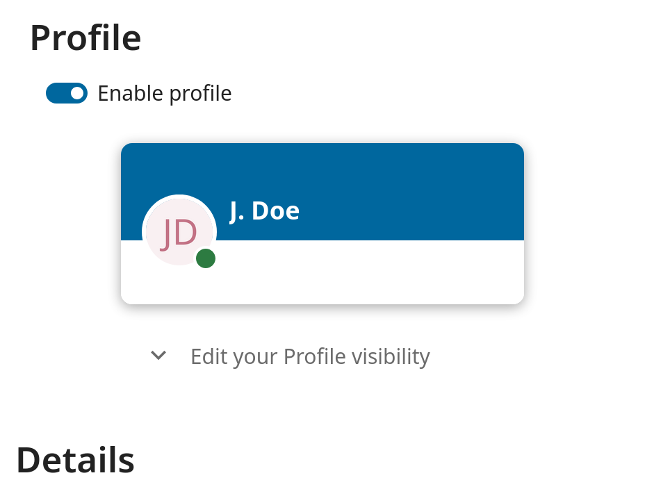

Mar úsáideoir, is féidir leat do shocruithe pearsanta a bhainistiú.
Chun rochtain a fháil ar do shocruithe pearsanta:
Cliceáil ar do phictiúr próifíle sa chúinne uachtarach ar dheis de do shampla Nextcloud chun an roghchlár a oscailt
Má chliceálann tú ar Socruithe ón roghchlár anuas osclaíonn tú sainroghanna an úsáideora
Note
Más riarthóir thú, is féidir leat úsáideoirí a bhainistiú agus an freastalaí a riaradh freisin. Ní fheictear na naisc seo d’úsáideoir nach úsáideoir é nó í.
Braitheann na roghanna atá liostaithe ar an Leathanach Socruithe Pearsanta ar na feidhmchláir atá cumasaithe ag an riarthóir. I measc cuid de na gnéithe a fheicfidh tú tá:
Úsáid agus cuóta ar fáil
Bainistigh do phictiúr próifíle
Ainm iomlán (Is féidir leat é seo a dhéanamh rud ar bith is mian leat, toisc go bhfuil sé scartha ó d'ainm logáil isteach Nextcloud, atá uathúil agus nach féidir a athrú)
Fillteán réamhshocraithe chun doiciméid nua a shábháil chuige
D'aitheantas comhroinnte Cónaidhme
Naisc roinnte sóisialta
Leagan Nextcloud
Note
Roghanna agus socruithe atá ar fáil ag brath ar chumraíocht do riarthóra. Mura bhfuil tú in ann an pasfhocal nó an t-ainm taispeána a athrú i do shocruithe pearsanta, déan teagmháil le do riarthóir chun cabhair a fháil.
Socraíonn roinnt riarthóirí a leabhar seoltaí domhanda a roinnt le cásanna Nextcloud eile (ar a dtugtar * Freastalaithe Iontaofa*) nó fiú leis an domhan mór. Tá sé seo cabhrach nuair a bhíonn dhá chás ag iarraidh oibriú go dlúth le chéile, nó nuair a bhíonn daoine ag iarraidh Nextcloud a úsáid mar leabhar teileafóin fíorúil chun daoine eile a bhrabhsáil. Ligeann sé freisin cuardach a dhéanamh ar theagmhálacha, scaireanna a chruthú agus go leor eile.
Is féidir leat na sonraí pearsanta atá agat a roinntear a athrú trí raon feidhme do shonraí a shocrú. Má chliceálann tú ar an deilbhín glasála, osclófar an anuas seo a leanas in aice le gach iontráil:
Má shocraíonn tú do shonraí go Príobháideach, ní bheidh aon duine ach tú in ann iad a fheiceáil.
If you set your data to Local, all logged in users within your Nextcloud instance will be able to see the information, but no one outside of it.
Má shocraíonn tú do shonraí go Cónaidhme, beidh an freastalaí(na) freastalaithe iontaofa a chuireann do riarthóir leis in ann na sonraí seo a fheiceáil, chomh maith le gach úsáideoir logáilte isteach.
Má shocraíonn tú do shonraí go Global, is féidir le duine ar bith do shonraí a fheiceáil. I gcásanna áirithe úsáide tá sé seo ag teastáil. B’fhéidir gur mhaith le duine a bhfuil ról poiblí aige ar nós margaíocht nó díolacháin a dteagmháil a roinnt le raon leathan nasc nach bhfuil ag baint úsáide as Nextcloud b’fhéidir.
If the profile is enabled by your administrator, then your profile data can be read by other users and guest.
To control who can see which information you can adjust the scopes already mentioned:
Private will only allow you and users you have added to your phone book to see the data
Local and above will also allow guests to see your data
To restrict the visibility even more you can disable guest from seeing your profile data by changing the profile visibility to logged-in users.
On the personal settings you can find the button for profile visibility:

Which allows to configure the visibility for each profile attribute: